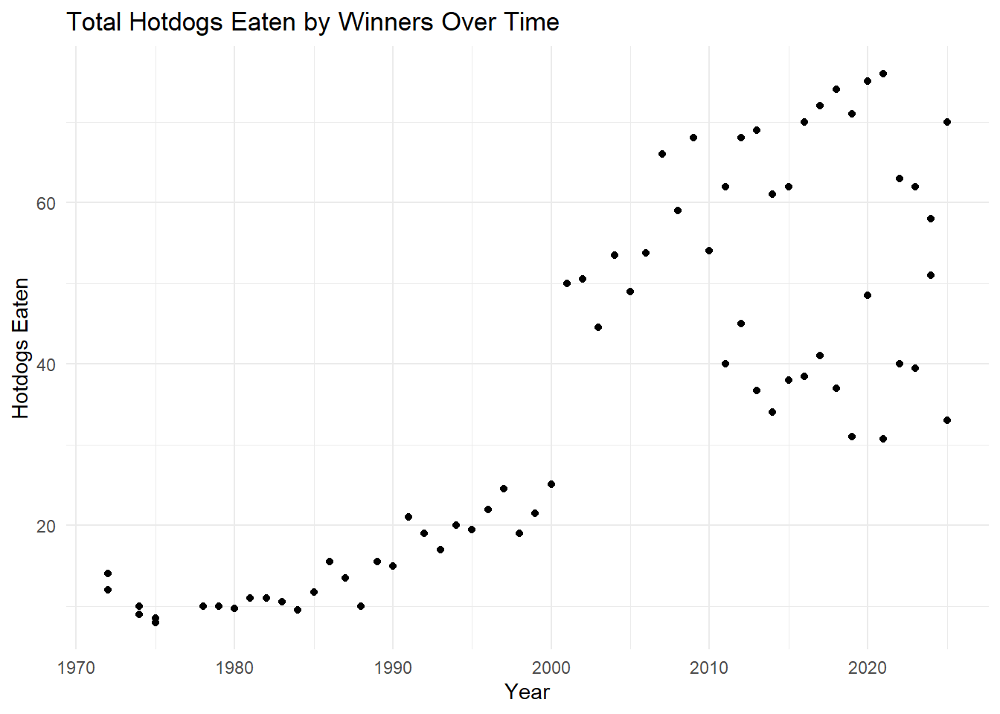
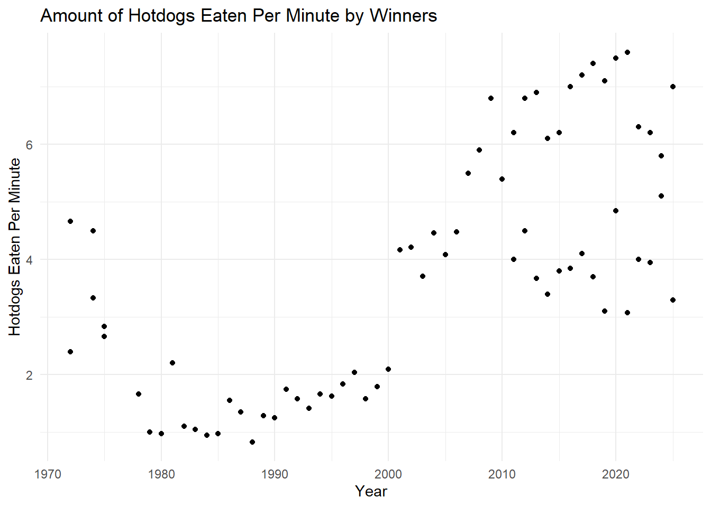
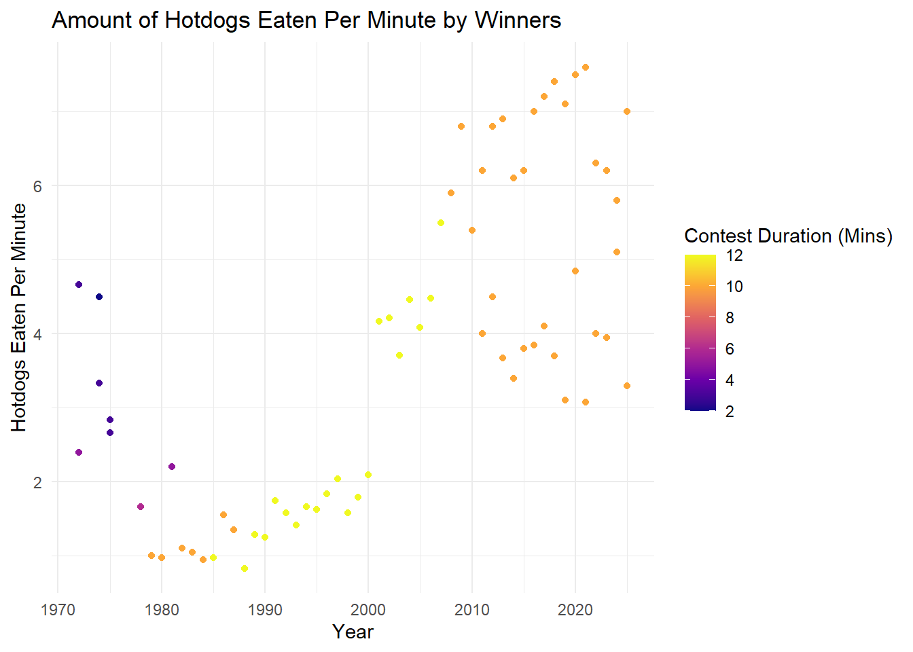

Nathan’s Hotdog Eating Contest Over Time
Nathan’s Hot Dog Eating Contest is a competitive eating contest where people from around the world try to eat as many hotdogs as possible in a limited amount of time. The contest has not always had a set duration, but the competition has been fixed at 10 minutes long since 2008. The top five competitors of the contest are awarded large cash prizes, with the 1st place prize in 2025 being $10,000. 10 grand is a lot of money. How much does it really take to win 1st place in Nathan’s Hot Dog Eating Contest? Does it get harder and harder every year? In other words, how many hotdogs do the winners eat and do the winners eat more and more hotdogs every year?

The plot to the right shows the total hotdogs eaten by every winner over time. As you can see, early winners of the competition ate less than 20 hotdogs before claiming victory. However, winners after 2000 ate more than 40 hot dogs!
Look at how the number of hotdogs eaten by the winner has changed over time. As time goes on, winners do tend to eat more hotdogs, but there is a weird spike around 2000. Let’s find out what happened to cause the amount of hotdogs winners ate to increase by so much!
Taking a closer look at the competitions from 1999 to 2003 shows us who is responsible for the spike in hotdogs consumed in the early 2000s.
In 2000, eating 25.1 hotdogs was enough to claim first place. In 2001, Takeru Kobayashi ate 50, double the amount of hotdogs eaten by the winner from the year before. How was Kobayashi able to eat double the amount of hotdogs of the previous winner?
Kobayashi was able to eat twice as many hotdogs as previous winners because he invented a new technique called the “Solomon Method.” This new strategy involved splitting hotdogs in half, eating both at once, and soaking the hotdog bun in water to make it easier to swallow. Kobayashi paired the Solomon Method with shaking his body to force food down.
Now we know how Kobayashi did it, but how much faster is his method compared to earlier years?
This plot shows us how fast in hotdogs per minute winners have eaten over the years of the competition.
It’s interesting to see that a few of the earliest winners ate at a similar speed as Kobayashi did during his 2001 win. If past winners could match his speed, why did they eat so many fewer total hotdogs?
Some important context to remember about the competition is that the duration has varied over the years. In this plot, brighter colors (e.g. yellow) show years where the contest was longer and darker colors (e.g. blue) show years when the contest was shorter.
Competitors who won when the contest was only 2 to 5 minutes long were able to eat at full speed the entire time. Later winners, like Kobayashi, were eating for much longer, leaving time for them to slow down from fatigue. Knowing this, we can reason that early winners were not able to eat as many total dogs, despite matching Kobayashi’s pace, because they did not have as much time to eat nor the technique to continue at that pace for a longer duration.
No matter the duration, it definitely takes dedication and a strong stomach to place first in this famous competitive eating contest.
# A tibble: 5 × 6
Year Sex Dogs Winner Time hotdogs_per_minute
<dbl> <dbl> <dbl> <chr> <dbl> <dbl>
1 1999 1 21.5 Steve Keiner 12 1.79
2 2000 1 25.1 Kazutoyo Arai 12 2.09
3 2001 1 50 Takeru Kobayashi 12 4.17
4 2002 1 50.5 Takeru Kobayashi 12 4.21
5 2003 1 44.5 Takeru Kobayashi 12 3.71

